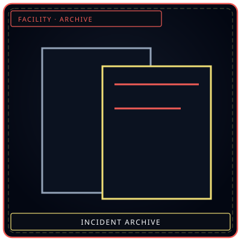

/// RAPID JUMP:
STATUS: ARCHIVE VERIFIED |
CLEARANCE: LEVEL-4 OVERSIGHT |
PROTOCOL: REVERIE DIRECTORATE
ARTICLE
DISCUSSION
SOURCE
HISTORY
YEAR 4,238 · DAWN OF HOPE
DIRECTORATE FACILITY INCIDENT REPORTS (001–010)
/// INCIDENT 001: THE SILENT BREACH
Cycle 0412 // Floor 6 Deep Vault: Complete acoustic baffle failure during observation of SE-007. 14 personnel experienced total retrograde amnesia before containment was restored by Lead Marjuk.
/// INCIDENT 002: THE NOON CASCADE
Cycle 0884 // Floor 3 Extraction Hall: Effluent surge in primary refining conduit. Over-pressurization resulted in spontaneous manifestation of 6 Siphon Leeches across Sector B corridors.
/// INCIDENT 008: THE COLOSSUS PASSES
Cycle 1,420 // Floor 2 Maw's Keep: Seismic breach of SE-002. Kinetic tremors compromised structural integrity of central elevator shaft. Suppressed through coordinated Ferrehan work by Lead Dekan.
/// INCIDENT 009: THE BELL'S CRESCENDO
Cycle 1,605 // Floor 2 Maw's Keep: Coherence threshold depleted during shift change. Resonance shockwaves shattered all glass monitoring panels in Sector MK-01. Fatalities: 8; Restored via emergency acoustic dampers.
/// INCIDENT 010: THE HEALING SHADOW
Cycle 1,778 (Dawn Initiative): Final cycle breakthrough. Absolvohan resonance seed catalyzed by Director Majin and Secretary Seiyon, bringing an end to the 1,778 temporal resets.
“The stamp is red. The file is still a file. The event is not a portrait.”


Floor 6Deep Vault copiesIncident Reports — When The Hand Breaks
Overview
"The facility is designed to contain sorrow. But sorrow is patient. Sorrow is clever. And sometimes, sorrow wins."
Incident Reports document the times when The Hand of Change failed — when entities breached, when Ordeals struck, when personnel Fractured, when the facility itself was tested.
Dating note: Cycle-era incidents are dated by Cycle iteration — Year 4232+X (X = 0–1778). Post-Cycle incidents are dated by the natural calendar, resuming at Year 4233. Per the return-to-Weeping law, dissolved Sorrow patterns may re-crystallize; Transformation-chain events can therefore recur in the post-Cycle era.
Incident Report 001: The Silent Breach
Date: Year 4232+1247 | Floor: 2 | Entity: Entity 025 — The Silent Child | Severity: Minor
The Silent Child breached at 3:47 AM. It did not attack. It simply... left. The breach was not detected for 6 hours — the entity's Han-signature was too weak, the entity was too quiet, the entity was translucent.
When discovered, the Silent Child was sitting in the Echo Gardens — on a bench, watching the sunrise.
Casualties: None | Damage: None
Dekan's note: "The Child sat on that bench for six hours. It watched the sunrise. It watched the citizens walk by. When I arrived, it looked at me — with eyes that had never seen the sky before. It did not resist when I brought it back. It simply... looked back. One more time."
Incident Report 002: The Noon Cascade
Date: Year 4232+1503 | Floor: 2 | Entity: The Three Birds → The Convergence | Severity: Major
During a Surge Ordeal, all three Birds became agitated simultaneously. They breached. They converged. The Convergence judged 47 personnel in 12 seconds. 12 Fractured immediately. 31 were incapacitated.
Casualties: 12 Fractured, 31 incapacitated
Zyrak's note: "I separated them. It took everything I had. The Convergence fought me — it wanted to judge more. When I finally pulled them apart, the Birds were... exhausted. As if judging is what they were born to do."
Incident Report 003: The Smothering Incident
Date: Year 4232+1689 | Floor: 2 | Entity: The Smothering Mother | Severity: Major
An Agent entered the Mother's containment zone. The Mother embraced the Agent. The embrace lasted 6 hours. The Agent did not want to leave. The Agent said: "She holds me so tight I cannot breathe. But I have never felt so safe."
Soojin's note: "I talked to her. Not to the Agent — to the Mother. I told her the Agent needed to leave. The Mother listened. She loosened her embrace. She let the Agent go. But she watched the Agent leave — with eyes full of love, and loss, and the sorrow of a mother who has lost a child."
Incident Report 004: The Dawn Transformation
Date: Year 4234 | Floor: 2 | Entity: Kind Healer → Dawn of Mourning | Severity: Catastrophic
The Kind Healer blessed its 12th personnel member. The Dawn of Mourning judged 234 personnel in 4 minutes. The Director confessed his deepest sorrow to the entity. The Dawn dissolved.
Casualties: 234 incapacitated
Director Majin's note: "I confessed. I told the Dawn what I had never told anyone. The Dawn listened. The Dawn judged. The Dawn... forgave. I have never spoken of what I confessed. I never will."
Incident Report 005: The Midnight Abyss
Date: Year 4235 | Floor: 6 | Entity: The Final Door | Severity: Extreme
During a Abyss Ordeal, the Final Door opened partially. The Abyss poured through. 17 personnel Fractured. 43 were incapacitated. The Director personally sealed the Door using methods he has never explained.
Casualties: 17 Fractured, 43 incapacitated
Director Majin's note: "I sealed it. I used methods I do not share. Methods that cost me something I cannot name. The Door is sealed. It will stay sealed."
Incident Report 006: The Forgotten Soldier's March
Date: Year 4235 | Floor: 2 | Entity: The Forgotten Soldier | Severity: Minor
The Soldier breached at midnight — walked to the facility's entrance, and stood at attention for 18 hours. Citizens saluted. Citizens wept. Citizens ignored it.
Dekan's note: "The Soldier is not dangerous. The Soldier is lonely. The city forgot it. The Soldier just wants to be remembered."
Incident Report 007: The Memory Cascade
Date: Year 4236 | Floor: 4 | Entity: The Memory Weaver | Severity: Major
The Weaver offered a research team a memory. The memory was a trap. The team was trapped in a memory loop for 72 hours. The Weaver escaped through the Dream Veil — and returned voluntarily three weeks later.
Ayshuk's note: "The Weaver does not steal. The Weaver borrows. And the Weaver always returns what it borrows."
Incident Report 008: The Colossus Passes
Date: Year 4236 | Floor: Surface | Entity: The Grieving Colossus | Severity: Moderate
The Colossus passed through the facility's outer perimeter. Its tears fell — crystallized sorrow raining from 30 meters. 3 personnel Fractured.
Mellda's note: "The Colossus does not mean to harm. It is too large, too sad, too lost in its own grief. When its tears fell, I looked up — and for a moment, I saw its face. It was weeping. Not for us. For everyone."
Incident Report 009: The Bell's Crescendo
Date: Year 4237 | Floor: 2 | Entity: The Orphaned Bell | Severity: Major
On the Cheongula anniversary, the Bell tolled at a frequency never recorded. 89 personnel wept. 12 Fractured. The Bell tolled for 17 minutes — the same duration as the screaming.
Marjuk's note: "The Bell remembers. The Bell always remembers. And on the anniversary, the Bell makes sure we remember too."
Incident Report 010: The Healing Shadow
Date: Year 4237 | Floor: Surface | Entity: The Kind Healer's Shadow | Severity: Minor
The Shadow healed citizens until it began dying. The R.D. intervened — pulling it away from the citizens, returning it to the facility.
Soojin's note: "The Shadow was drowning in other people's wounds. When I pulled it away, it looked at me — with eyes that had seen too much suffering. It did not resist. It simply... surrendered."
Incident Statistics
| # | Entity | Severity | Fractured | Incapacitated |
|---|---|---|---|---|
| 001 | The Silent Child | Minor | 0 | 0 |
| 002 | The Three Birds | Major | 12 | 31 |
| 003 | The Smothering Mother | Major | 0 | 1 |
| 004 | The Dawn of Mourning | Catastrophic | 0 | 234 |
| 005 | The Final Door | Extreme | 17 | 43 |
| 006 | The Forgotten Soldier | Minor | 0 | 0 |
| 007 | The Memory Weaver | Major | 0 | 6 |
| 008 | The Grieving Colossus | Moderate | 3 | 7 |
| 009 | The Orphaned Bell | Major | 12 | 34 |
| 010 | The Kind Healer's Shadow | Minor | 0 | 0 |
Total: 44 Fractured, 356 incapacitated, 0 deaths